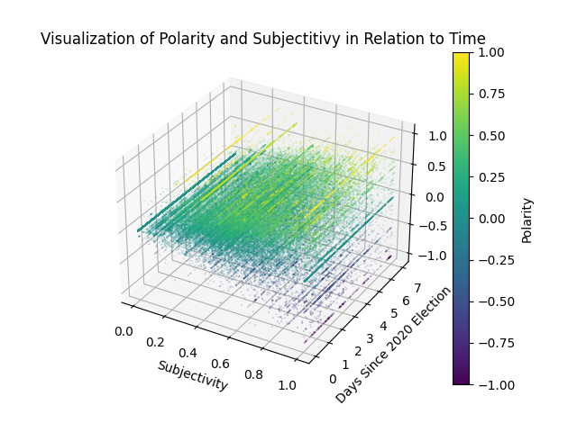

Seach Query : "2020 election"
Observations:
There are some interesting trends that we can observe from the data. As the subjectivity increases, the polarity becomes more varied. Another thing that we noticed was that the graph showed that people tweet more during the daytime (7-10), which is consistent with the time interval when most people are awake.